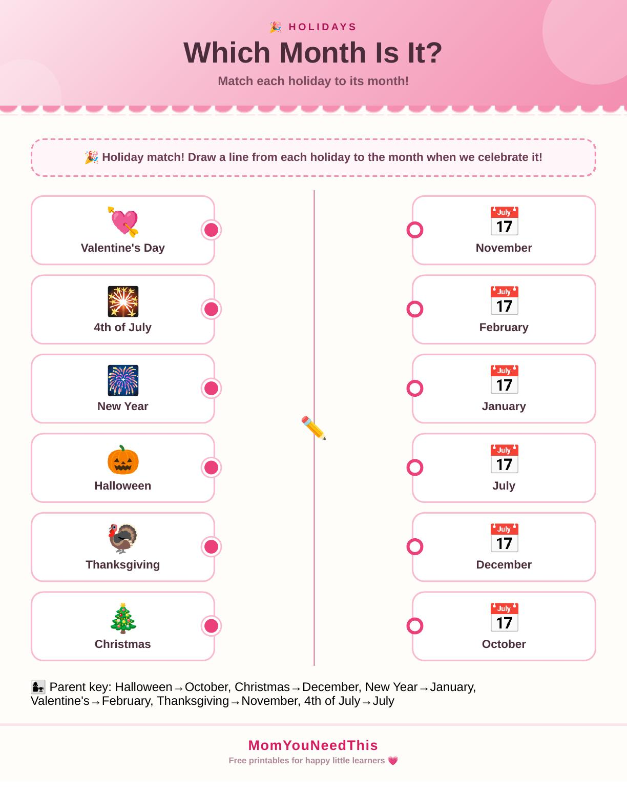

Holiday Calendar Activities Free Printable Holiday Calendar Activities For Kids
Quick Answer
This free printable holiday calendar activity is designed for toddlers and preschoolers ages 2-5. The worksheet includes hands-on exercises that build early learning skills through play. Download and print at home with no signup needed — no account required, just print and start learning.
Count down to the fun with these free printable holiday calendar activities. Toddlers and preschoolers learn about holidays through the year and mark them on their own calendar.
🎉 Celebrate The Holidays
Use these activities to help your child learn the names of holidays, which month each one falls in, and how to count down the days to a celebration.
Free Holiday Calendar Activities

How To Use These Activities
Mark the holidays on the printable calendar together and count how many days until the next one. Talk about how your family celebrates each holiday. Use the printable for calendar time or before a big holiday.
Why Learn About Holidays?
Learning about holidays builds cultural awareness, calendar skills, and counting practice. Countdowns also teach patience and make time feel exciting instead of abstract.
🎁 Keep Exploring Free Learning Activities
Discover more printable activities, toddler resources, and learning ideas created for busy parents.
🎁 View All Free Resources🖨️ How to Use This Printable
Get started in minutes — everything here is free and made for busy parents.
- Download the printable. Tap the download button to save the free Holiday Calendar Activities file to your device.
- Print it out. Use any home printer and regular paper — cardstock works great for pages little hands will use again and again.
- Learn together. Sit with your child, follow the activity, and keep it playful. Short sessions work best.
- Explore more. Check the free printables linked below for your next activity.
❓ Holiday Calendar Activities FAQs
Is the Holiday Calendar Activities printable free?
Yes — every printable on MomYouNeedThis is 100% free to download and print. No signup, no payment, just tap the download button.
How do I download and print it?
Tap the download button on this page to save the file, then print it on regular paper with any home printer. Cardstock makes extra-durable pages for little hands.
What does my child learn from this activity?
Holiday activities build calendar skills, counting, and cultural awareness. Counting down to celebrations also teaches patience and number sequencing.
🔗 More Free Printables You’ll Love
Pair this printable with more free learning activities from the MomYouNeedThis library.
- 📆 Days of the Week ActivitiesLearn the seven days of the week in order.
- 📅 Calendar Learning ActivitiesExplore all calendar learning activities.
- 🔤 Alphabet Coloring PagesFree A to Z alphabet coloring printables for toddlers and preschoolers.
- 🎏 Free 5-Minute Toddler ActivitiesQuick learning activities for busy little ones.